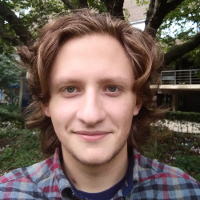

About
I'm a PhD student at Newcastle University, UK. I work on typed functional
programming and formal verification of assembly programs.
I am from the city of Rostov-on-Don, Russia where I did my undergraduate degree in Applied Mathematics and then Masters in Computer Science at MMCS SFEDU.
Download CV
Contact
Email: mail@geo2a.info
Twitter: @geo2a
Publications
Selective Applicative Functors / A. Mokhov, G. Lukyanov, S. Marlow, J. Dimino // ICFP 2019 — URL: http://doi.acm.org/10.1145/3341694
Formal Verification of Spacecraft Control Programs: An Experience
Report / A. Mokhov, G. Lukyanov, Lechner J. // Haskell Symposium 2019 — URL: https://dl.acm.org/citation.cfm?doid=3331545.3342593
Towards a Coq Formalisation of Build Systems / G. Lukyanov, A. Mokhov // CoqPL 2019 — URL: https://popl19.sigplan.org/event/coqpl-2019-towards-a-coq-formalisation-of-build-systems
Concurrency Oracles for Free / G. Lukyanov, A. Mokhov // Proceedings of the International Workshop on Algorithms & Theories for the Analysis of Event Data 2018, Bratislava, Slovakia, June 25, 2018 — URL: http://ceur-ws.org/Vol-2115/ATAED2018-112-127.pdf
Functional parser of markdown language based on monad combining and
monoidal source stream representation / G. Lukyanov, A. Pelenitsin // Communications in Computer and Information Science. — 2018. — Vol. 779. — Pp. 90–101. — DOI: 10.1007/978-3-319-71734-0_8.
Prototyping Resilient Processing Cores in Workcraft / G. Lukyanov, A. de Gennaro, A. Mokhov, P. Stankaitis, M. Rykunov // 2nd International Workshop on Resiliency in Embedded Electronic Systems, Lausanne, Switzerland, 2017.